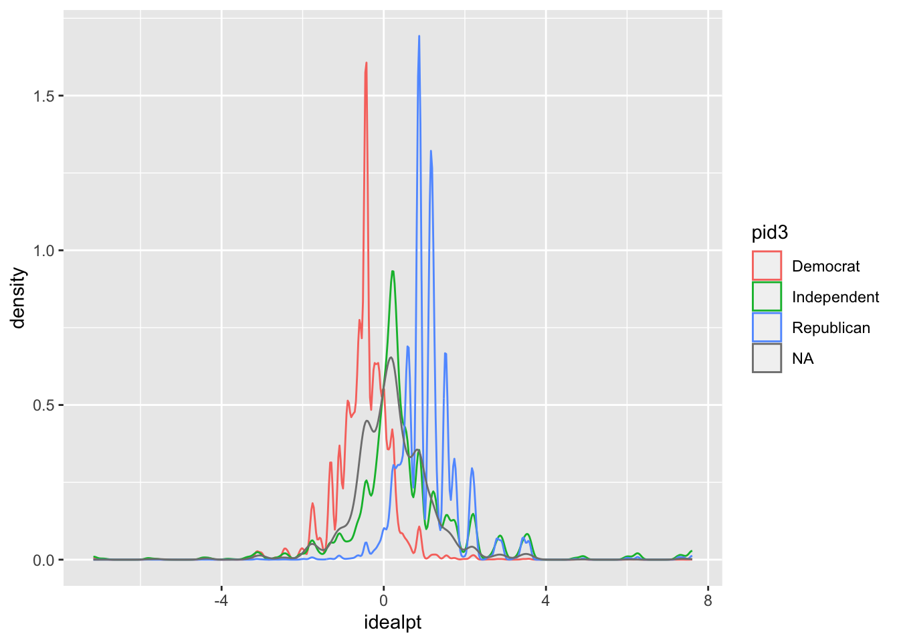

Programming & Methods Resources Workshop
Introduction to The Grammar of Graphics (ggplot) & Data Visualization
Carlos Algara
5/25/2018
General Overview of ggplot Tutorial
The basic logic (& relative advantages) behind the ggplot coding interface can be summarized in the following key points:
Consistent langugage underlies the code, commonly referred to as the ``grammar of graphics’’ (Wilkinson 2005)
Very flexible programming which can, with few changes, be used to create multiple types of data visualization. For example, it takes one simple section of code to change a bar chart to a line graph.
Many themes are available to polish and cutomize your high resolution plots.
Most importantly, for our purposes, ggplot code is fully intergrated in the R computing environment. What this means is that we can derive multiple quantities of interest (descriptive statistics, model output, post-estimated model quantities of interest, etc.) using various packages and plot them using ggplot
HUGE, I’m talking HUGE, user community dedicated to providing crowd sourced code for whatever cutomization you seek in the ggplot environment.
In this tutorial, I will provide an applied tutorial to understanding the logic of the ggplot language while completing the following tasks:
Plotting descriptive distributions of key variables (histograms, density plots, bar charts, dot plots)
Plotting simple bivariate relationships of interest with appropriate measures of uncertainty around estimates (scatterplots, difference of means bar charts, boxplots)
Plotting model quantities of interests that provide for a graphical interpretation of our empirical work rather than tables. We will make coefficient plots articulating model output, plots articulating interactive relationships of interest, and post-estimation plots of interest (predicted probabilities from a logistic regerssion, marginal effects plots).
Basic preview to graphic add-ons to ggplot which provides for spatial mapping and plotting of social networks.
Plotting Descriptives
Let’s explore some aggregate data on U.S. Senate elections in the direct-election era from
library(ggplot2) # Load ggplot2
library(plyr) # Loaad plyr, which provides tools for summarizing data
library(readstata13) # Load readstata13 to read Stata Files
library(dplyr) # Loaad dplyr, which provides tools that I always use, like as_tibble
library(reshape) # Load reshape, which provides for the melt function needed for data manipulation.
load("/Users/carlosalgara/Desktop/carlos_school/PhD_UC Davis/Dissertation Project/Ch2_Electoral_Implications_Approval/Aldrich_McKelvey_Scaling/Aldrich_McKelvey_Scaling_2008_2016_Positions_Results.Rdata") # Load R environment containing various estimations of candidate & citizen ideological ideal points from 2008-2016.
# Let's explore the nature of ideological preferences in the American electorate over time!
print(as_tibble(rescaled_overtime_idealpts_2008_2016))## # A tibble: 262,896 x 8
## year_district_id intercept aldmck_weight_par… idealpt selfplace polinfo
## <chr> <dbl> <dbl> <dbl> <dbl> <dbl>
## 1 2008 NY14 -0.653 0.218 0.218 4 1.000
## 2 2008 CA23 -2.18 0.435 -1.31 2 1.000
## 3 2008 WA8 -0.943 0.354 1.18 6 0.977
## 4 2008 MA2 -0.843 0.281 0.562 5 0.987
## 5 2008 IL10 -3.05 0.653 -0.435 4 1.000
## 6 2008 MI15 -1.41 0.326 -1.09 1 1.000
## 7 2008 CA43 -0.957 0.261 -0.696 1 1.000
## 8 2008 NY22 -1.32 0.331 -0.994 1 0.879
## 9 2008 CA7 -1.09 0.326 -0.435 2 1.000
## 10 2008 NC4 -1.09 0.653 2.83 6 1.000
## # ... with 262,886 more rows, and 2 more variables:
## # idealpts_linear_map_overtime <dbl>, pid7 <chr># Huge data frame of scaled Aldrich-McKelvey ideal points for each CCES respondent from 2008-2016. For more information on the method deriving these scaled ideal points, see Ramey (2016).
# Of course, countless studies suggest that the distribution of ideological preferences of the mass public is unimodal. Let's make a density plot to see if this is the case.
ggplot(data=rescaled_overtime_idealpts_2008_2016,aes(x=idealpt))
# Not so fast my dude. We have to learn to crawl before we run, what happened?
# Now that we have some knowledge and have to specify our density plot aestic, let's get to work & make our plot!
ggplot(data=rescaled_overtime_idealpts_2008_2016,aes(x=idealpt)) + geom_density()
# Success! But there might be evidence that the distribution of ideological preferences might be trimodal. That is, clear partisan cleavages with respect to ideological preferences. Let's explore this possibility by first coding partisan preferences
rescaled_overtime_idealpts_2008_2016$pid3 <- ifelse(rescaled_overtime_idealpts_2008_2016$pid7 %in% c("Lean Republican","Not very strong Republican","Strong Republican"),"Republican",ifelse(rescaled_overtime_idealpts_2008_2016$pid7 %in% c("Lean Democrat","Not very strong Democrat","Strong Democrat"),"Democrat",ifelse(rescaled_overtime_idealpts_2008_2016$pid7 %in% c("Independent"),"Independent",NA)))
print(as_tibble(rescaled_overtime_idealpts_2008_2016)) # Let's check it out## # A tibble: 262,896 x 9
## year_district_id intercept aldmck_weight_par… idealpt selfplace polinfo
## <chr> <dbl> <dbl> <dbl> <dbl> <dbl>
## 1 2008 NY14 -0.653 0.218 0.218 4 1.000
## 2 2008 CA23 -2.18 0.435 -1.31 2 1.000
## 3 2008 WA8 -0.943 0.354 1.18 6 0.977
## 4 2008 MA2 -0.843 0.281 0.562 5 0.987
## 5 2008 IL10 -3.05 0.653 -0.435 4 1.000
## 6 2008 MI15 -1.41 0.326 -1.09 1 1.000
## 7 2008 CA43 -0.957 0.261 -0.696 1 1.000
## 8 2008 NY22 -1.32 0.331 -0.994 1 0.879
## 9 2008 CA7 -1.09 0.326 -0.435 2 1.000
## 10 2008 NC4 -1.09 0.653 2.83 6 1.000
## # ... with 262,886 more rows, and 3 more variables:
## # idealpts_linear_map_overtime <dbl>, pid7 <chr>, pid3 <chr>ggplot(data=rescaled_overtime_idealpts_2008_2016,aes(x=idealpt,color=pid3)) + geom_density()
# Urgh, good start but pretty ugly and nowhere close to publication quality. Let's make this prettier by factoring out our pid3 and getting rid of "NA".
rescaled_overtime_idealpts_2008_2016$pid3 <- factor(rescaled_overtime_idealpts_2008_2016$pid3,levels=c("Democrat","Independent","Republican"))
print(str(rescaled_overtime_idealpts_2008_2016$pid3))## Factor w/ 3 levels "Democrat","Independent",..: 2 1 3 2 1 1 1 1 1 3 ...
## NULL# Let's make a really pretty plot showing partisan differences.
ggplot(subset(rescaled_overtime_idealpts_2008_2016,rescaled_overtime_idealpts_2008_2016$pid3 != "Independent"),aes(x=idealpt,fill = pid3))+ geom_density(alpha=.2) + theme_bw() + scale_fill_manual("",values =c("blue","red")) + scale_x_continuous("Aldrich-McKelvey Ideological Placement (Liberal-Conservative)",breaks=c(-4,0,4),limits=c(-4,4),labels=c("-4","0","4")) + scale_y_continuous("Density",expand=c(0,0)) + theme(legend.position=c(0.10, 0.90), legend.box.just = "left", legend.key.size = unit(1,"line"), legend.key = element_rect(size = 0, color = 'white'), legend.text.align = 0, legend.box = "horizontal") + theme(panel.grid.major = element_blank(), panel.grid.minor = element_blank())# This is cool, let's do House candidates! First, let's check the data frame.
print(as_tibble(aldmck_congress))## # A tibble: 1,900 x 6
## district placement.dem_pty_l… placement.rep_pty_l… placement.dem_hse_l…
## <chr> <dbl> <dbl> <dbl>
## 1 AK1 -0.390 0.816 -0.287
## 2 AL5 -0.390 0.816 -0.115
## 3 AL3 -0.390 0.816 -0.234
## 4 AL2 -0.390 0.816 0.0107
## 5 AL4 -0.390 0.816 0.0506
## 6 AZ1 -0.390 0.816 -0.00825
## 7 AZ2 -0.390 0.816 0.0454
## 8 AZ3 -0.390 0.816 -0.246
## 9 AZ4 -0.390 0.816 -0.132
## 10 AZ5 -0.390 0.816 -0.209
## # ... with 1,890 more rows, and 2 more variables:
## # placement.rep_hse_libcon_placement <dbl>, year <dbl># Oh no, we have to manipulate the dataframe. Urgh, bummer, but easy!
house_candidates <- subset(aldmck_congress,select=c("year","district","placement.dem_hse_libcon_placement","placement.rep_hse_libcon_placement")) # Extract the variables you want
house_candidates <- melt(house_candidates,id=c("year","district")) # Melt the dataframe from wide to long!
print(table(house_candidates$variable)) # We have one variable with a string variable indicating candidate type.##
## placement.dem_hse_libcon_placement placement.rep_hse_libcon_placement
## 1900 1900house_candidates$variable <- ifelse(house_candidates$variable == "placement.dem_hse_libcon_placement","Democrat",ifelse(house_candidates$variable == "placement.rep_hse_libcon_placement","Republican",NA))
ggplot(house_candidates, aes(x = value, fill = variable,linetype=variable)) + geom_density(alpha=.2) + theme_minimal() + scale_fill_manual("",values =c("blue","red")) + scale_x_continuous("Candidate Aldrich-McKelvey Ideological Placement (Liberal-Conservative)",limits=c(-1,1),breaks=c(-1,0,1),labels=c("-1","0","1")) + scale_y_continuous("Density",expand=c(0,0)) + theme(legend.position="bottom", legend.box.just = "left", legend.key.size = unit(1,"line"), legend.key = element_rect(size = 0, color = 'white'), legend.text.align = 0, legend.box = "horizontal") + scale_linetype_manual("",values=c("solid","dashed")) + facet_wrap(~year)# What did we just do?
# We can also assess the validity of our ideal points by looking at the box plot distributions
ggplot(rescaled_overtime_idealpts_2008_2016, aes(x=selfplace, y=idealpts_linear_map_overtime, group=selfplace)) + geom_boxplot(colour = "black",outlier.shape = NA) + scale_y_continuous("Liberal-Conservative Aldrich-McKelvey Ideal Point Estimates",limits=c(-2.5,2.5),breaks=seq(-2,2,1)) + scale_x_continuous("Liberal-Conservative Raw Ideological Self-Placement",breaks=seq(1,7,1)) + scale_fill_discrete(guide=F) + stat_summary(fun.y = mean, geom="point",colour="black", size=2.00, shape= 17) + scale_shape_discrete("") + theme_minimal()